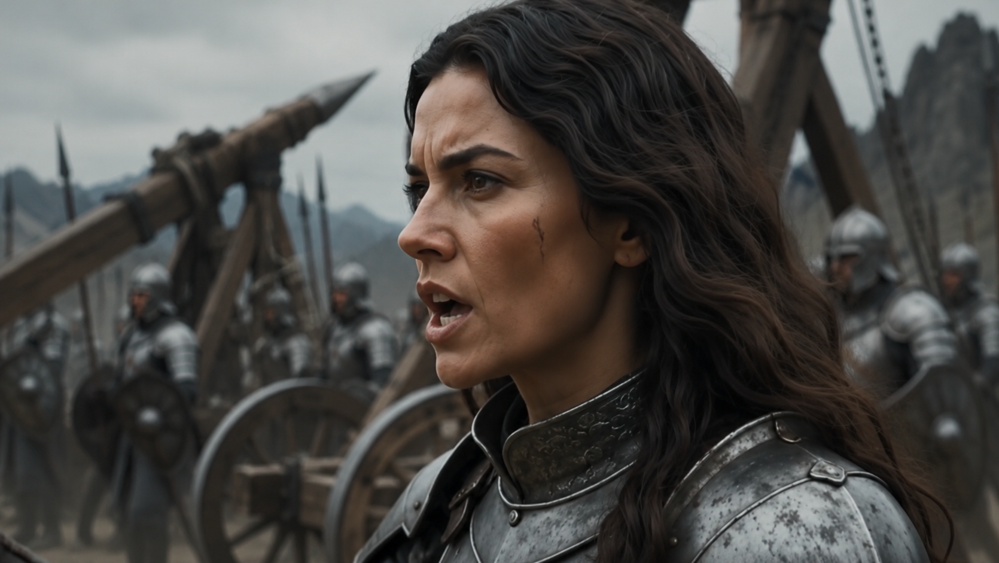

O véu, a traição de Tamel e a emboscada dos Grakh dizimaram o exército de Redom.
Bryne retorna viva, partiu com cem mil homens e retorna com menos de mil.
Ela jura vingança... contra os Grakh.

Você controla o ângulo e a força do disparo. O vento (seta no canto superior esquerdo da cena) empurra o projétil para o lado — mas só enquanto ele está no ar.
É por isso que ângulo e vento se relacionam: um ângulo mais alto faz o disparo subir mais e ficar mais tempo no ar, dando mais tempo pro vento desviar a trajetória. Um ângulo mais baixo (mais direto) chega mais rápido e sofre menos com o vento — mas exige mais força pra cobrir a mesma distância.
Use o guia pontilhado enquanto mira pra ver como ângulo + força + vento juntos vão se comportar, antes de soltar o disparo.
Protótipo v0 — física de arco/vento com valores provisórios pra teste de sensação. Alvo: âncora no pescoço/ombro do Volkarn. 3 tentativas — errando as 3, ele acorda (game over). Sirva este arquivo por um servidor local (não abra como file:// direto) pra evitar bloqueio de leitura de vídeo pelo navegador.